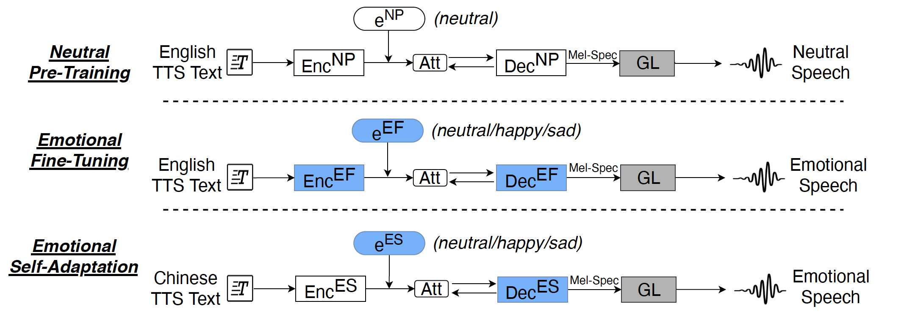

Abstract
Recent advances of neural Text-to-Speech (TTS) have made “human parity” synthesized speech possible when a large amount of training corpus is available. Furthermore, emotion control can be achieved by adopting the emotion codes in the unified model, referred to as emotional TTS. However, due to the limitation of annotated emotional training corpus, emotional TTS system tends to have lower performances. To address this problem, we present a multi-stage cross-lingual transfer learning scheme, whereby we first pretrain an end-to-end TTS model using an English standard TTS corpus. Next, an end-to-end emotional TTS model is initialized using the parameters of the pretrained TTS model, and fine-tuned using an English emotional TTS corpus. Finally, a small Mandarin emotional TTS corpus was utilized to do self-adaptation. With such a learning process, the Mandarin emotional TTS model can project high-quality emotional speech under the limited emotional corpus. Experiments demonstrate our approach outperforms all baseline systems in terms of naturalness and emotion expressiveness.
Fig.1: Block diagram of the proposed training scheme, multi-stage cross-lingual transfer learning. The white box indicates that its parameters are initialized randomly, the blue box indicates that its parameters are initialized with the parameters of the previous stage, while the gray box means that there are no trainable parameters. (Att: Attention mechanism; GL: Griffin-Lim algorithm.)
A: one-stage training scheme
B: two-stage transfer learning scheme
C: two-stage cross-lingual transfer learning scheme
D: proposed three-stage cross-lingual transfer learning scheme
Speech samples: |
||||
|---|---|---|---|---|
| A | B | C | D | |
| [1] | ||||
| neutral | ||||
| happy | ||||
| sad | ||||
| [2] | ||||
| neutral | ||||
| happy | ||||
| sad | ||||
| [3] | ||||
| neutral | ||||
| happy | ||||
| sad | ||||
| [4] | ||||
| neutral | ||||
| happy | ||||
| sad | ||||
| [5] | ||||
| neutral | ||||
| happy | ||||
| sad | ||||